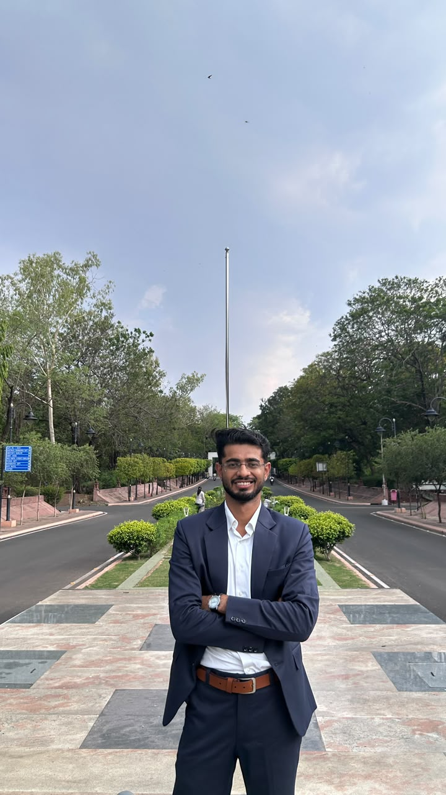

About

Sourabh Joshi (Graduate Student Member, IEEE) is an M.Tech student in Electrical Engineering (Power Electronics) with research interests in power electronic converters, renewable energy integration, and battery energy storage systems. He is a member of the IEEE Power Electronics Society (PELS) and the IEEE Young Professionals community, actively engaging in technical activities and research-oriented discussions related to modern energy systems.
He is an aspiring Ph.D. in Electrical Engineering, driven by a desire to understand not only engineered systems, but ultimately the fundamental nature of reality itself. For him, engineering is not merely an applied discipline—it is a lens through which the structure of the world can be examined.
Alongside his academic pursuits, Sourabh has a strong background in chess as a FIDE-rated player and coach. Chess plays a central role in shaping his thinking: patience, structure, long-term planning, and respect for complexity strongly influence both his research mindset and his approach to life.
He speaks English and is actively learning Dutch (Nederlands), viewing language as a gateway to culture, philosophy, and alternative ways of reasoning about the world.
“Om te slagen in het leven heb je twee dingen nodig: onwetendheid en vertrouwen.”